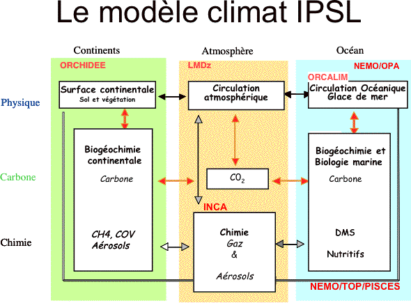

Cet outil peut s’avérer très utile pour réaliser des projections climatiques, ce qui signifie qu’ils se servent des modèles climatiques pour essayer de prévoir l’évolution du climat dans le futur. C’est notamment ce que fait le GIEC (Groupe d'experts intergouvernemental sur l'évolution du climat), qui étudie les impacts de l'activité humaine sur les changements climatiques.. Grâce à ces modèles, ils peuvent prévoir l’évolution du climat et envisager des solutions pour atténuer les changements climatiques.
